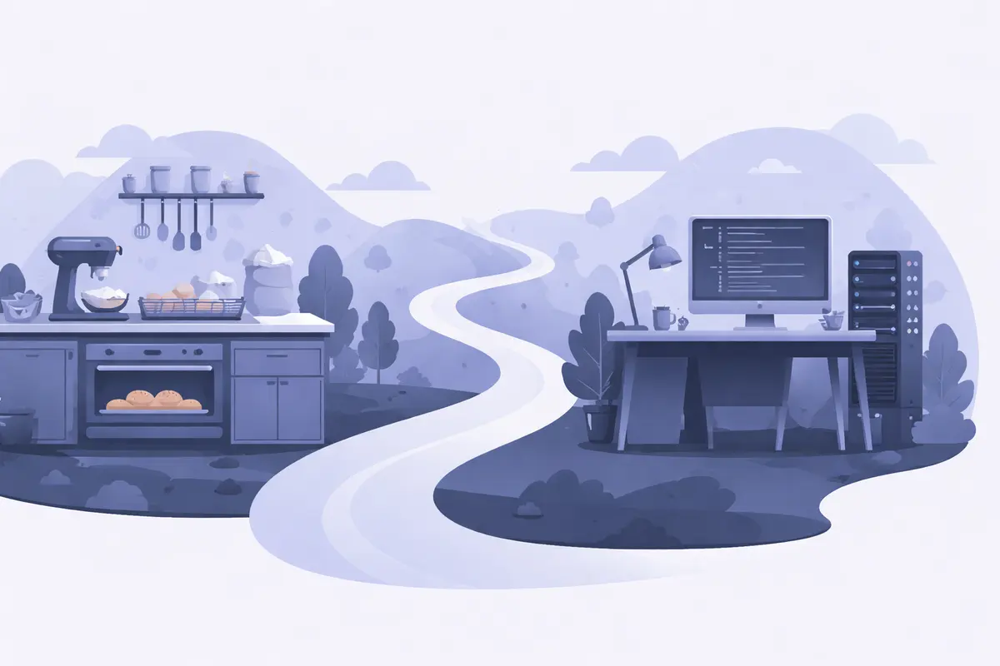

Parcours & réflexions
De la pâtisserie au DevOps — apprentissages, erreurs et réflexions techniques.
De la pâtisserie au développement — Parcours, doutes et reconversion
10 ans de pâtisserie, une reconversion dans la tech via 42, et une direction DevOps. Parcours, doutes et détermination.

Comment j'ai réussi la piscine et le tronc commun de 42
La piscine, le tronc commun, les projets clés : retour concret sur mon parcours à 42, ce qui m'a aidé et ce que j'en retiens.

Glasck — Premier lancement d'un projet en production
Docker Compose, Traefik, monitoring Prometheus/Grafana, et les leçons d'un vrai service avec de vrais utilisateurs.